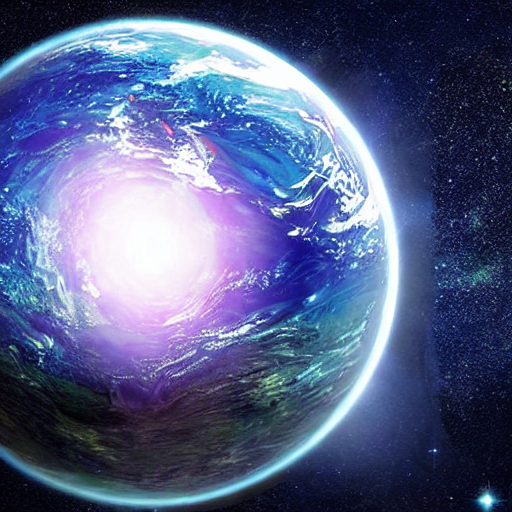

Vega Vortex

-
star Csillagrendszer: Vega
-
language Bolygó: Vega Prime
-
menu_book Történelmi leírás: Vega Prime az egyik első bolygó, amely otthont adott a Csillagközi Száguldás futamainak. A gravitációs anomáliák miatt a pálya a pilóták egyik kedvenc helyszínévé vált, és minden évben rekordszámú nézőt vonz.
hiking Látványosságok:
-
Gravitációs Térhullámok: Természetes gravitációs mezők, amelyek a verseny részeivé váltak.
-
Légköri Fényshow: A bolygó légkörében megfigyelhető természetes fényjáték.
restaurant Gasztronómia:
A helyi specialitás a „Gravitációs Desszert,” lebegő édességek, amelyek a bolygó gravitációs viszonyait kihasználva készülnek. Az éttermekben népszerű a „Vega Prime Gyümölcssaláta” is, egzotikus galaktikus gyümölcsökből.